ROBUSTA ABRASIVOS
Catálogo completo
Conheça nossos materiais, medidas, granulometrias e aplicações.
Cintas de Lixa
Qualidade para cada aplicação
Soluções em abrasivos de alta performance para diversos materiais e processos.
Materiais disponíveis
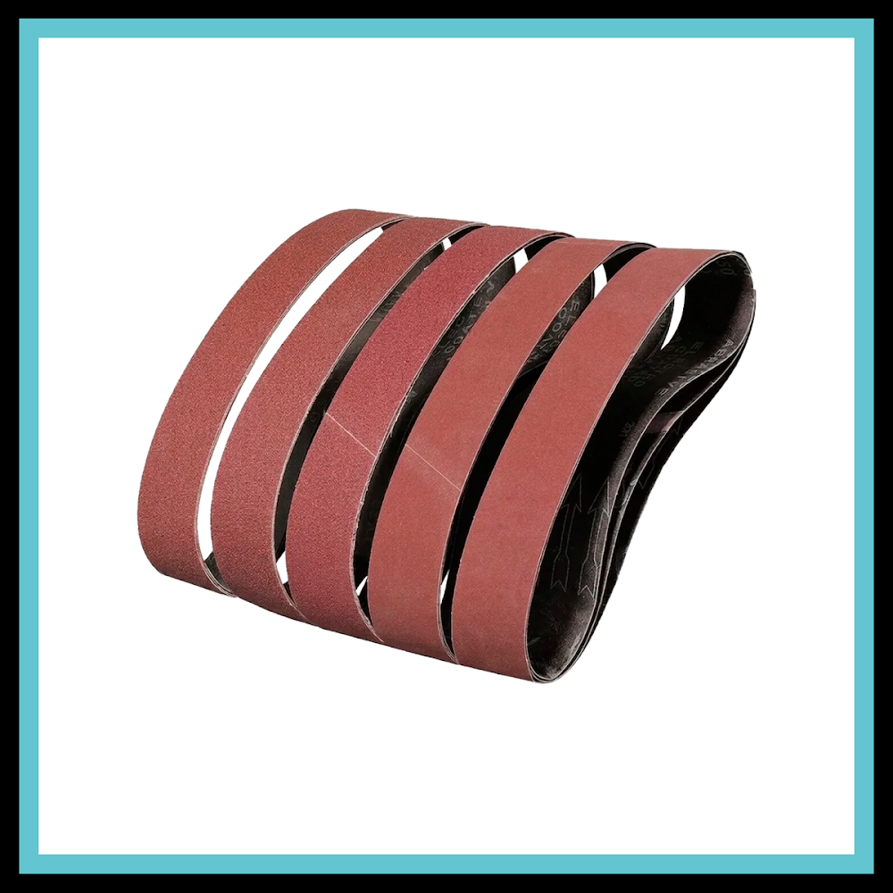
Óxido de Alumínio
- Costado de pano
- Grãos P36 a P600
- Excelente custo-benefício
Uso geral em metais ferrosos, madeiras e plásticos.
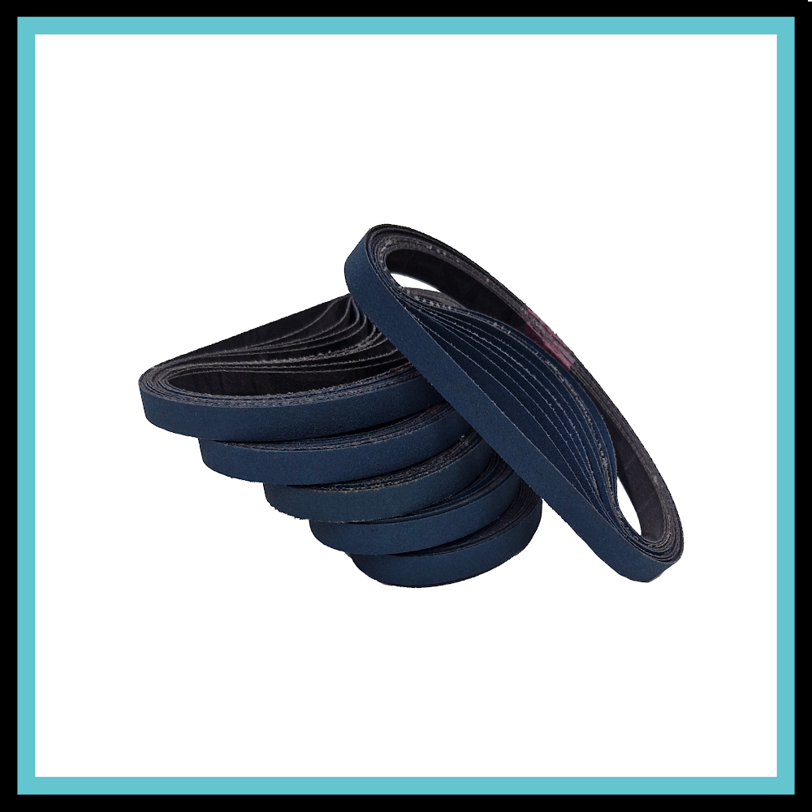
Zircônio
- Alto desempenho com metais duros e alumínio
- Aquecimento menor na peça
- Melhor rendimento / custo
Ideal para desbaste pesado em inox, aço carbono e ligas não ferrosas.
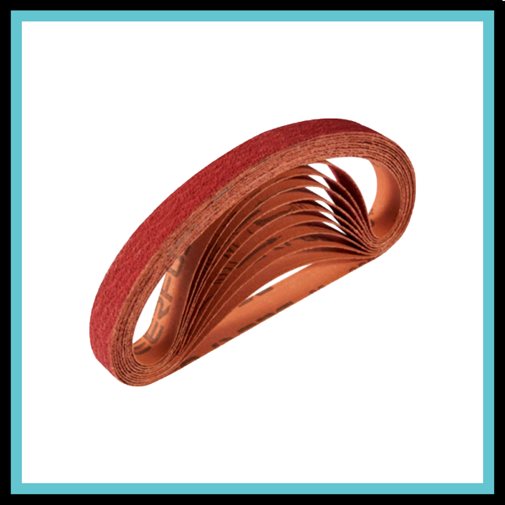
Cerâmico
- Maior durabilidade
- Alto desempenho com ligas metálicas duras
- Melhor custo por peça
Remoção agressiva em aços ligados, inox e superligas.
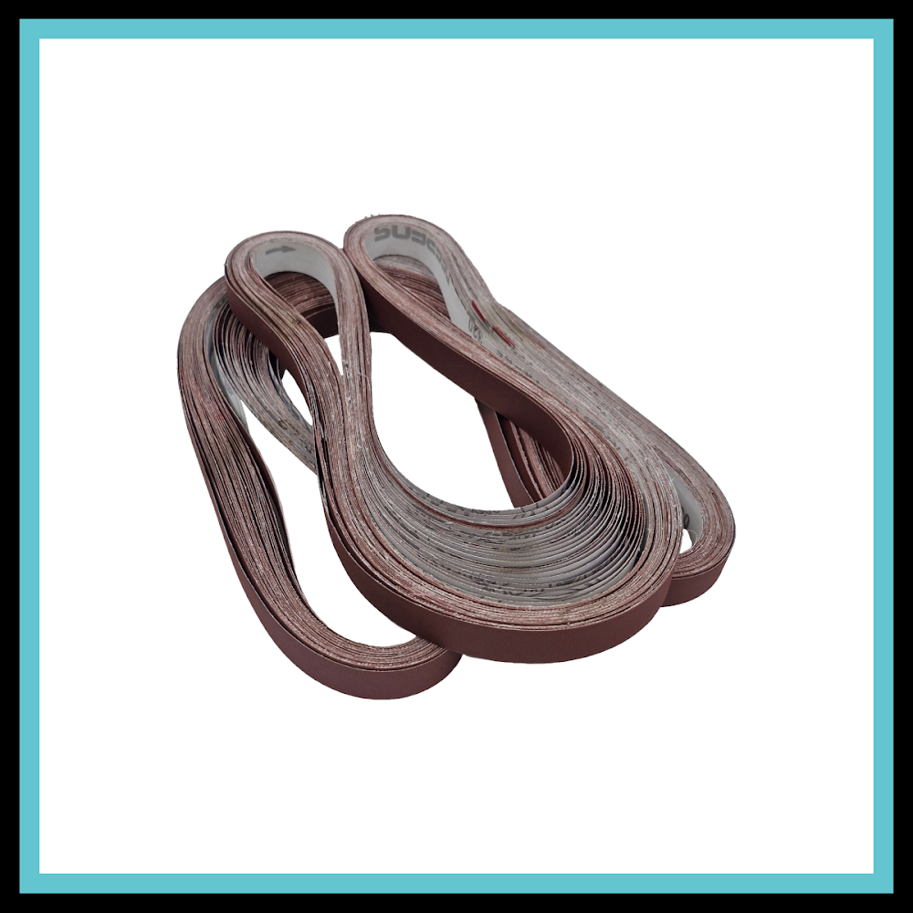
Óxido Flexível
- Ideal para polimentos finos
- Resistência em polimentos secos ou com óleo
- Excelente opção para trabalhos de precisão
Acabamento e polimento de peças de precisão e virabrequins.
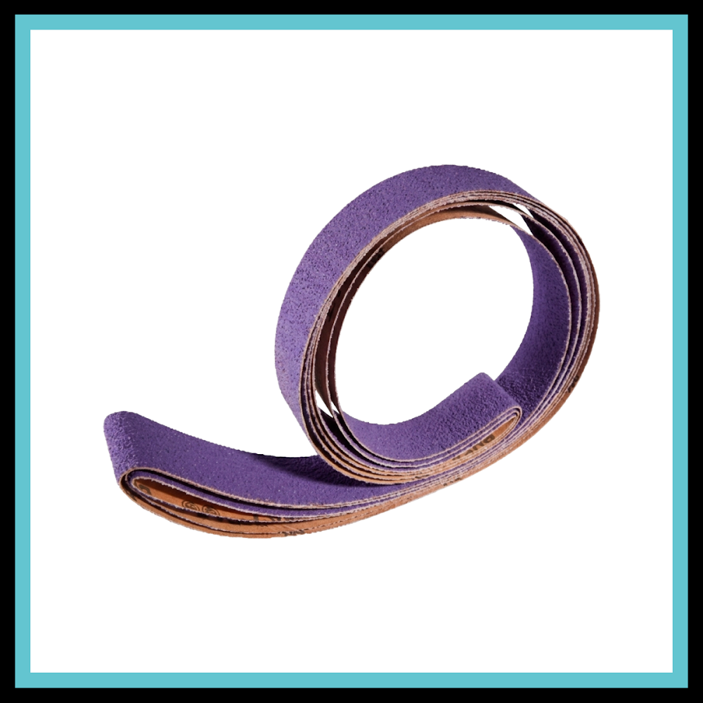
Bora7
- Alta remoção de material
- Excelente desempenho sob pressão
- Alta resistência ao calor
- Maior produtividade
Uso geral em aço carbono, inox, ligas de aço, cutelaria e peças forjadas.
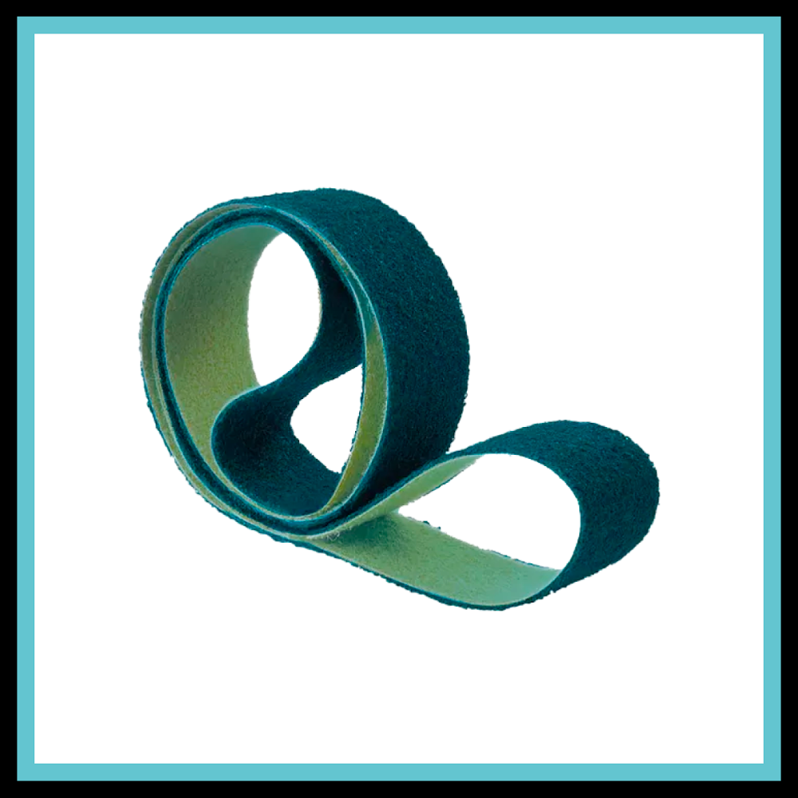
Surface
- Acabamento uniforme
- Não altera a geometria da peça
- Ideal para preparação de superfícies
- Rebarbação e uniformização
Metais, preparação para pintura, acabamento e remoção de oxidação superficial.
Encontre a cinta ideal para seu equipamento
1. Portáteis e Pneumáticas
| Medida | Máquinas / Equipamentos | Aplicação |
|---|---|---|
| 520 × 20 mm | PUMA AT-7009 | Lixamento em espaços reduzidos, acabamento em metais, madeiras e plásticos. |
| 533 × 9 mm |
Makita DBS180RTJ — Lixadeira de Cinta Sem Fio 18V
Makita 9032 — Lixadeira de Cinta 500W |
Acabamentos finos e trabalhos detalhados em metais, plásticos e materiais leves. |
| 457 × 12 mm | Lixadeiras pneumáticas de cinta estreita Equipamentos desta classe podem utilizar cintas próximas de 12/13 × 457 mm. Verifique a largura aceita pelo equipamento. | Lixamento em cantos, rebarbas, soldas e superfícies de difícil acesso. |
2. Cintas para Rodas e Máquinas Médias
| Medida | Máquinas / Equipamentos | Aplicação |
|---|---|---|
| 444 × 25 mm | Roda Expansiva 140 × 50 mm Roda expansiva com centro de alumínio. | Lixamento e acabamento em rodas expansivas, cutelaria, peças metálicas e operações de acabamento. |
| 686 × 50 mm |
LITH LT050 — Moto Esmeril 6" 375W com Lixadeira de Cinta
FortG Pro FG056 — Moto Esmeril 6" 375W com Lixadeira de Cinta Worker — Moto Esmeril com Lixadeira 3450 RPM Bivolt |
Desbaste, nivelamento e acabamento em metais, madeiras e outros materiais. |
| 915 × 100 mm |
Vonder LCV375 — Lixadeira Combinada 370W
FortG Pro FG058 — Lixadeira de Cinta Combinada de Bancada 6" 350W Manrod MR-42 — Lixadeira Multifuncional de Cinta e Disco 550W Manrod MR-47 — Lixadeira Combinada de Bancada Lixadeira Combinada Cinta e Disco 400W |
Lixamento de superfícies planas, nivelamento, acabamento e desbaste em madeira e metais. |
3. Cintas para Máquinas Grandes
| Medida | Máquinas / Equipamentos | Aplicação |
|---|---|---|
| 7200 × 150 mm |
Maksiwa LIS
Maksiwa LIEC Também utilizada em lixadeiras industriais de cinta longa configuradas para 150 × 7200 mm. |
Lixamento pesado, acabamento de chapas, grandes superfícies e peças de grandes dimensões. |
| 6900 × 120 mm | Lixadeiras industriais de cinta longa Para equipamentos especificados para cinta 120 × 6900 mm. Consulte a medida indicada pelo fabricante da máquina. | Alta remoção de material, lixamento de grandes superfícies e acabamentos industriais. |
Os tamanhos apresentados são apenas alguns exemplos do nosso catálogo. Produzimos cintas de lixa em diversas medidas, materiais e granulometrias, inclusive sob medida para o seu equipamento.
Importante: a compatibilidade deve ser confirmada pela dimensão da cinta especificada pelo fabricante do equipamento. Modelos, versões e configurações de uma mesma máquina podem utilizar medidas diferentes.
Rodas PG
Acabamento profissional e alta produtividade
Rodas abrasivas desenvolvidas para operações de lixamento, acabamento e preparação de superfícies, oferecendo praticidade, desempenho e excelente rendimento em aplicações profissionais e industriais.
Rodas abrasivas PG
Alta produtividade
Desenvolvidas para proporcionar lixamento uniforme e eficiente, facilitando operações de acabamento e preparação de superfícies.
Diversas granulometrias
Disponíveis em diferentes grãos, permitindo escolher entre maior capacidade de remoção ou acabamento mais fino de acordo com cada aplicação.
Principais características
Medidas disponíveis
| Imagem | Diâmetro × Largura | Furo | Granulometrias | Indicação |
|---|---|---|---|---|
|
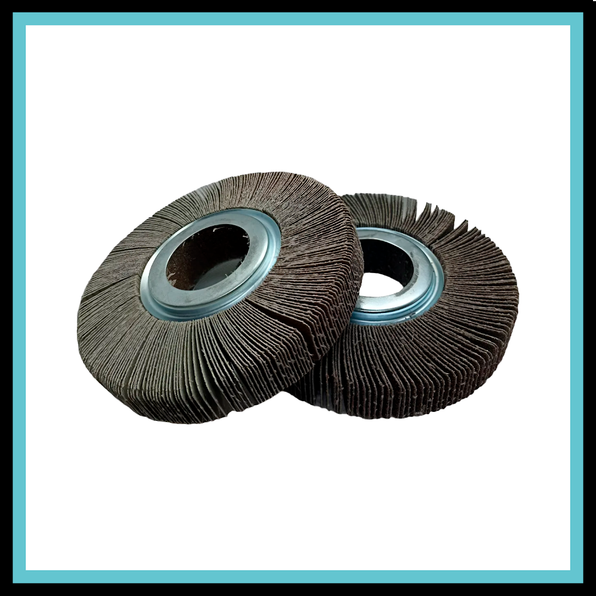 |
150 × 25 mm | 46 mm | P36 a P600 | Acabamento, lixamento e preparação de peças menores. |
|
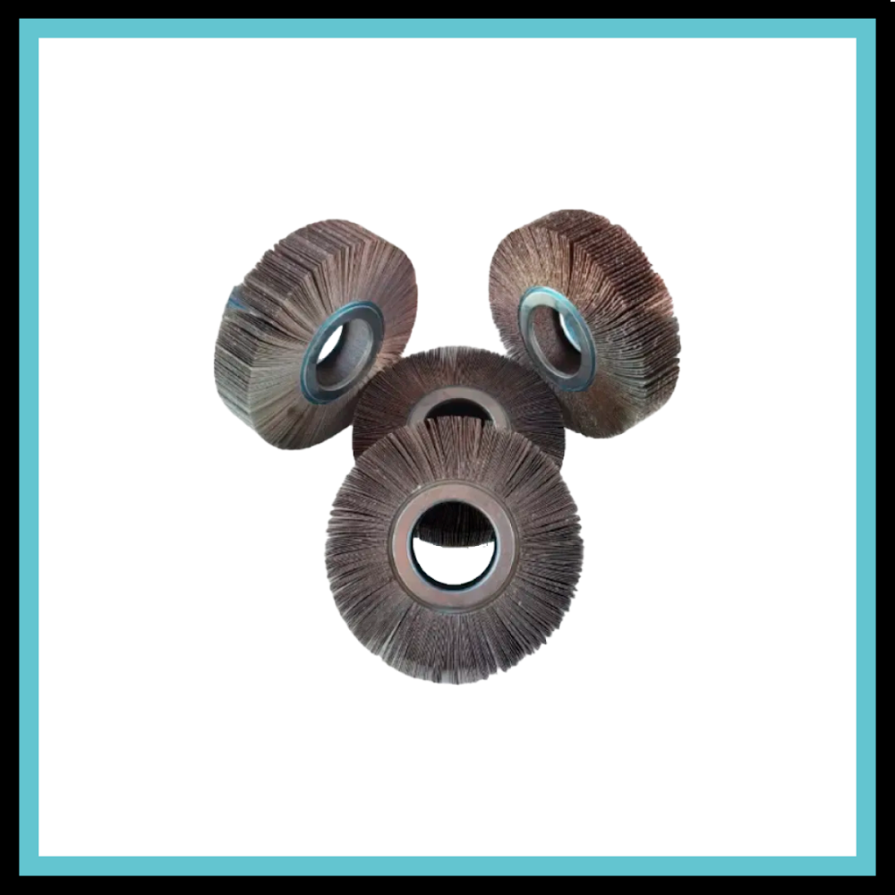 |
150 × 50 mm | 46 mm | P36 a P600 | Maior área de contato para acabamento e lixamento de superfícies. |
|
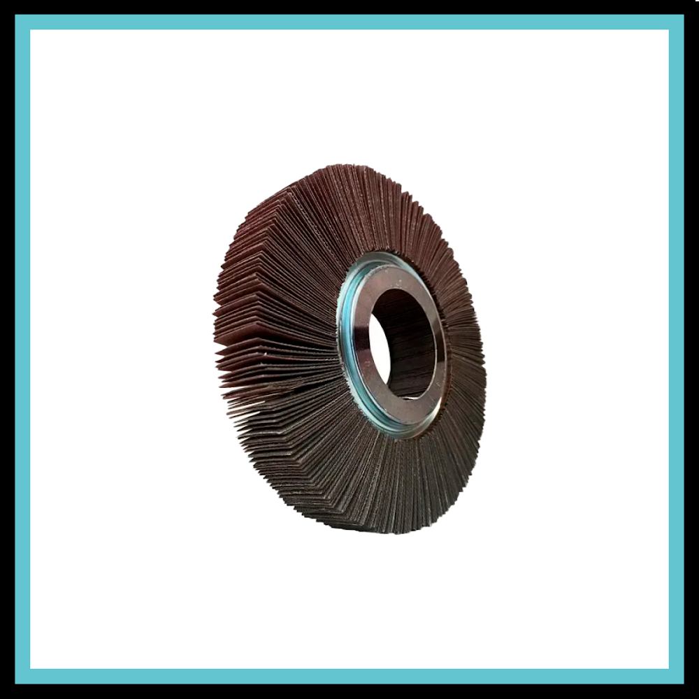 |
200 × 25 mm | 58 mm | P36 a P600 | Indicada para trabalhos profissionais que exigem maior diâmetro de trabalho. |
|
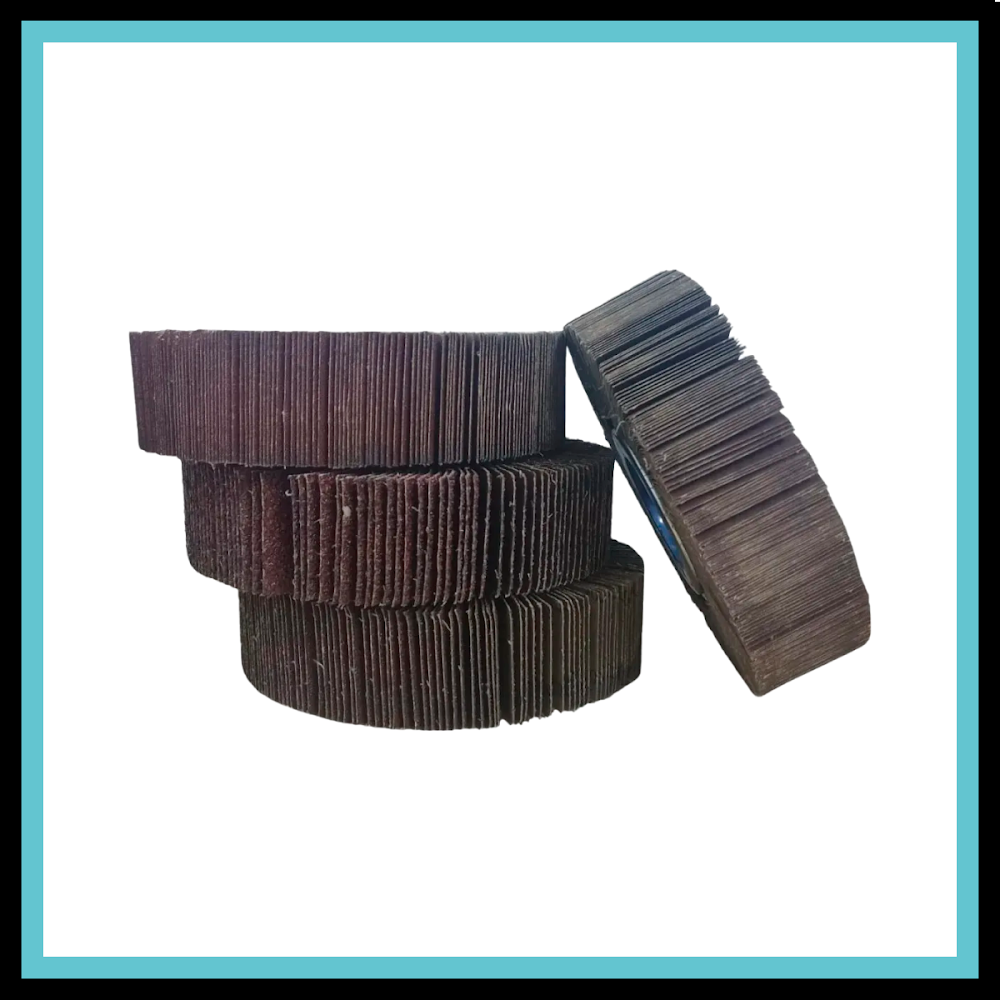 |
200 × 50 mm | 58 mm | P36 a P600 | Maior superfície de contato para operações de acabamento e lixamento. |
Granulometrias disponíveis
Escolha o grão para sua aplicação
Desbaste
Grãos mais grossos são indicados quando é necessária maior capacidade de remoção de material.
Lixamento intermediário
Granulometrias intermediárias proporcionam equilíbrio entre remoção de material e qualidade de acabamento.
Acabamento
Grãos mais finos são indicados para melhorar a uniformidade da superfície e reduzir marcas do processo de lixamento.
Acabamento fino
Granulometrias finas permitem obter superfícies mais uniformes em etapas finais do processo.
Entre em contato com a Robusta informando a medida da roda, diâmetro do furo, material trabalhado e acabamento desejado. Assim podemos auxiliar na escolha da configuração mais adequada para sua aplicação.
Rolos de Lixa
Versatilidade para cada aplicação
Soluções abrasivas em rolo para corte sob medida, uso manual ou fabricação de peças abrasivas, disponíveis em diferentes larguras, comprimentos e granulometrias.
Rolos e Jumbos
Materiais disponíveis

Óxido de Alumínio
- Alta versatilidade
- Excelente custo-benefício
- Ampla variedade de granulometrias
Uso geral em metais ferrosos, madeiras, plásticos e diferentes processos de lixamento e acabamento.

Zircônio
- Alto poder de remoção
- Excelente desempenho em metais
- Boa resistência em aplicações exigentes
Indicado para operações de maior remoção em aço carbono, inox e outros metais.

Cerâmico
- Alta capacidade de corte
- Maior durabilidade
- Alto desempenho em ligas metálicas duras
Indicado para aplicações exigentes, remoção de material e trabalhos em aços, inox e ligas metálicas.

Óxido Flexível
- Alta flexibilidade
- Ideal para acabamentos finos
- Boa adaptação a superfícies e contornos
Acabamento, polimento e trabalhos que exigem maior flexibilidade e adaptação à superfície.
Guia de seleção — Rolos
| Largura | Comprimentos disponíveis | Fornecimento | Grãos disponíveis |
|---|---|---|---|
| 50 mm | 5 m • 10 m • 25 m • 50 m | Rolo | P36 a P600 |
| 70 mm | 5 m • 10 m • 25 m • 50 m | Rolo | P36 a P600 |
| 150 mm | 5 m • 10 m • 25 m • 50 m | Rolo | P36 a P600 |
| 300 mm | 5 m • 10 m • 25 m • 50 m | Rolo | P36 a P600 |
Granulometrias disponíveis
Principais aplicações
Corte sob medida
Permite preparar folhas, tiras e peças abrasivas nas dimensões necessárias para cada processo.
Uso manual
Indicado para operações manuais de lixamento, preparação, ajuste e acabamento de superfícies.
Fabricação de peças abrasivas
Pode ser utilizado como matéria-prima para fabricação e conversão de diferentes formatos de produtos abrasivos.
Acabamento
Opções de materiais e granulometrias para diferentes níveis de remoção e acabamento superficial.
Os tamanhos apresentados são apenas alguns exemplos do nosso catálogo. Produzimos rolos em diversas larguras e comprimentos, inclusive sob medida para sua aplicação.
Fitas Mylar
Fitas para emenda de lixa em cinta
Soluções profissionais para união e fabricação de cintas abrasivas, desenvolvidas para proporcionar emendas resistentes, precisas e adequadas às diferentes granulometrias e aplicações.
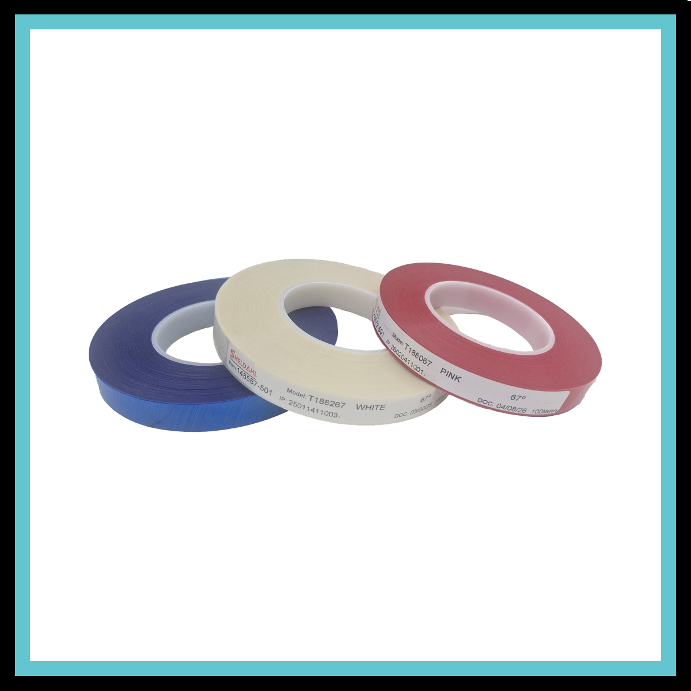
Emendas resistentes para cintas abrasivas
As fitas para emenda são utilizadas na fabricação de cintas de lixa, reforçando a região da união e contribuindo para uma emenda uniforme, resistente e confiável durante o trabalho.
- Reforçadas com fibras de poliéster
- Alta resistência mecânica
- Boa flexibilidade
- Espessura uniforme
- Aplicação profissional em cintas abrasivas
- Cores específicas para diferentes faixas de grão
Principais características
Escolha a fita para sua aplicação
| Imagem | Fita | Grãos recomendados | Características | Indicação |
|---|---|---|---|---|
|
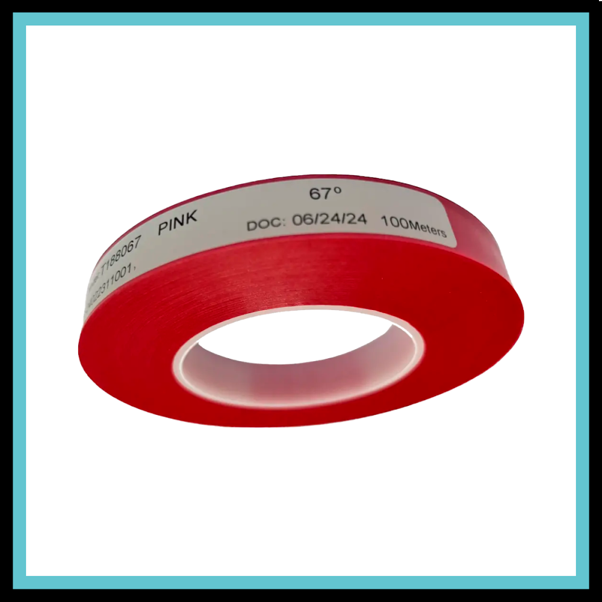 |
Fita Mylar V
VERMELHA |
P120 ou mais fino | Fita fina e flexível, indicada para cintas com granulometrias mais finas. | Recomendada para emendas em cintas de acabamento e aplicações em que maior flexibilidade da união é desejável. |
|
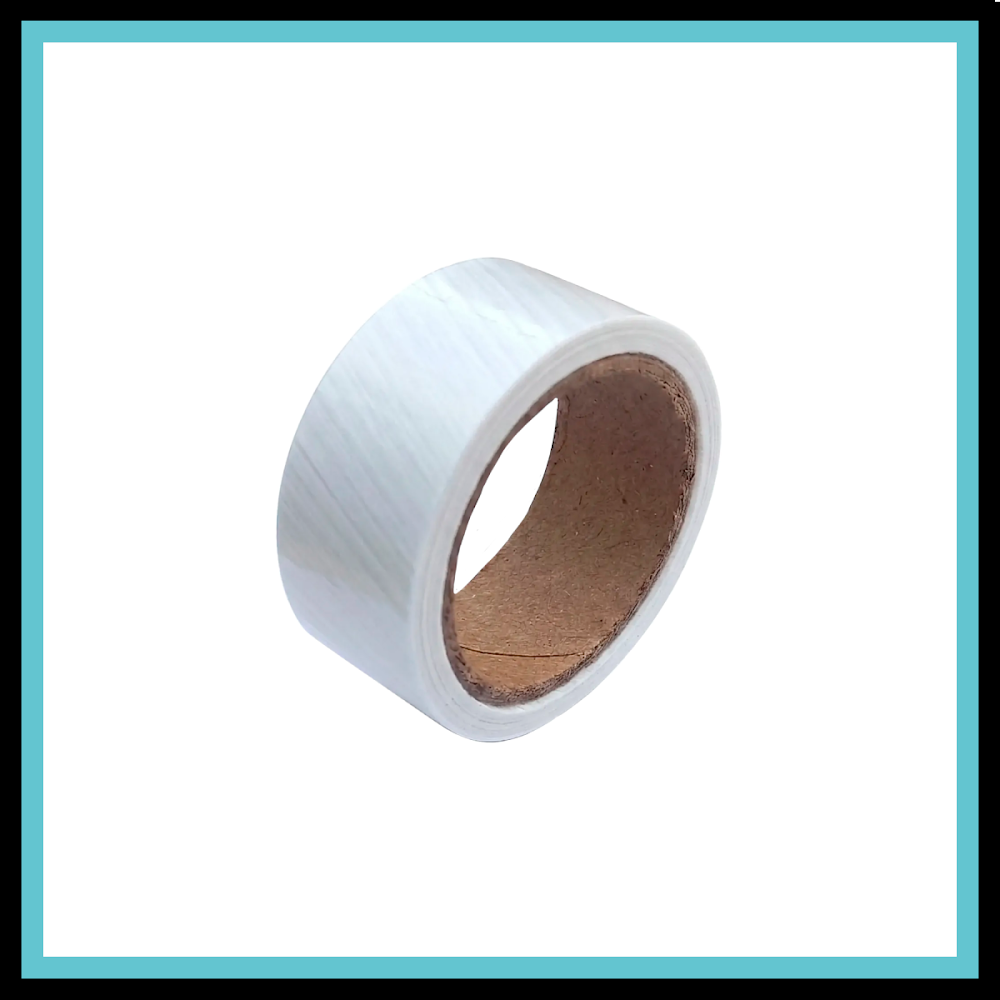 |
Fita Mylar B
BRANCA |
P120 a P60 | Excelente equilíbrio entre resistência e flexibilidade para uma ampla faixa de cintas abrasivas. | Opção versátil para emendas de cintas de granulometria média, combinando resistência e boa flexibilidade. |
|
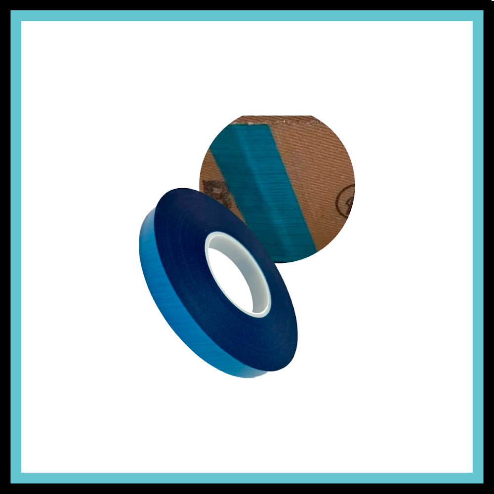 |
Fita Mylar
AZUL |
P100 a P40 | Alta flexibilidade associada a elevada resistência para aplicações mais exigentes. | Indicada para cintas de grãos médios e grossos que exigem uma emenda resistente sem perder flexibilidade. |
Qual fita escolher?
Vermelha
Para cintas de P120 ou mais fino. Indicada quando a aplicação exige uma emenda mais flexível para granulometrias finas.
Branca
Para cintas entre P120 e P60. Uma opção versátil que oferece equilíbrio entre resistência e flexibilidade.
Azul
Para cintas entre P100 e P40, especialmente quando é necessária alta flexibilidade combinada com elevada resistência.
Construção para uso profissional
Filme de poliéster reforçado
As fitas para emenda desta categoria utilizam uma construção em filme de poliéster reforçado com fibras de poliéster. Essa combinação proporciona resistência mecânica e flexibilidade adequadas ao processo de fabricação de cintas abrasivas.
A escolha da fita deve considerar a granulometria, o costado da lixa, a flexibilidade necessária e as condições de trabalho da cinta. Entre em contato com a Robusta informando o material e o grão utilizado para auxiliarmos na escolha da fita mais adequada para sua aplicação.
Disco Rokit SA331
Óxido de alumínio premium para acabamento profissional
Disco abrasivo de 125 mm desenvolvido para lixamento, preparação e acabamento de superfícies, combinando corte eficiente, acabamento uniforme e praticidade através da fixação por velcro.
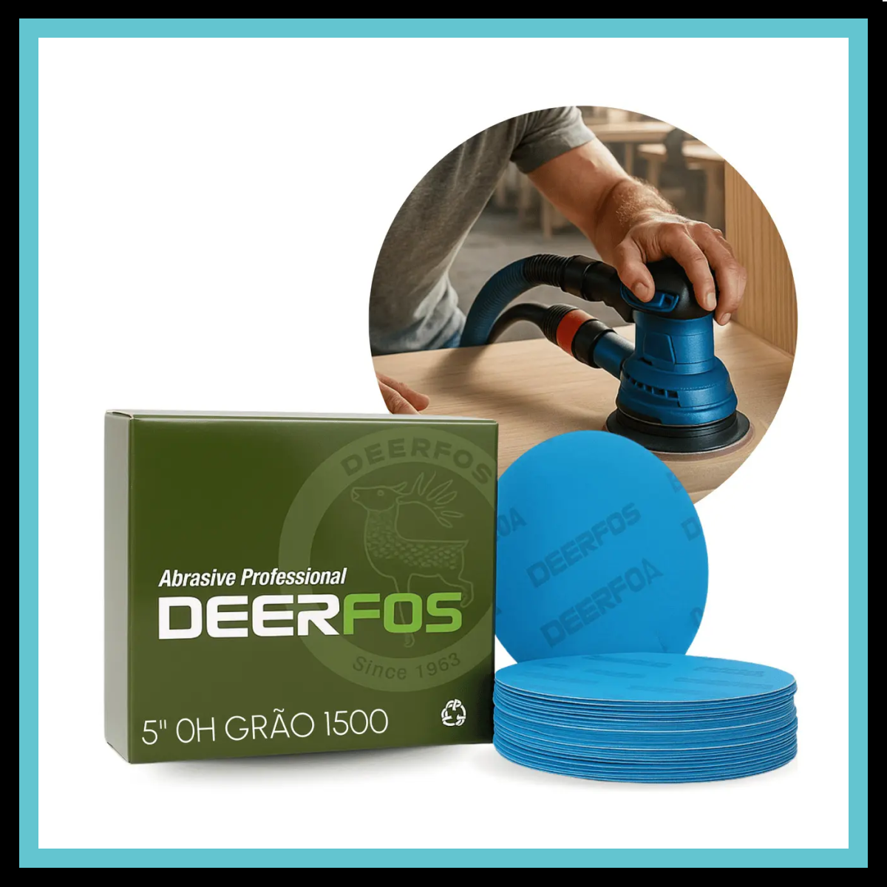
Disco Rokit Premium SA331
Desenvolvido para quem busca produtividade e qualidade de acabamento, o SA331 utiliza grão de óxido de alumínio e costado de filme resistente, oferecendo estabilidade durante o lixamento e excelente acabamento superficial.
- Diâmetro de 125 mm / 5"
- Óxido de alumínio premium
- Costado de filme resistente
- Fixação por velcro
- Disco sem furos
- Ampla variedade de granulometrias
Principais características
Conheça o SA331
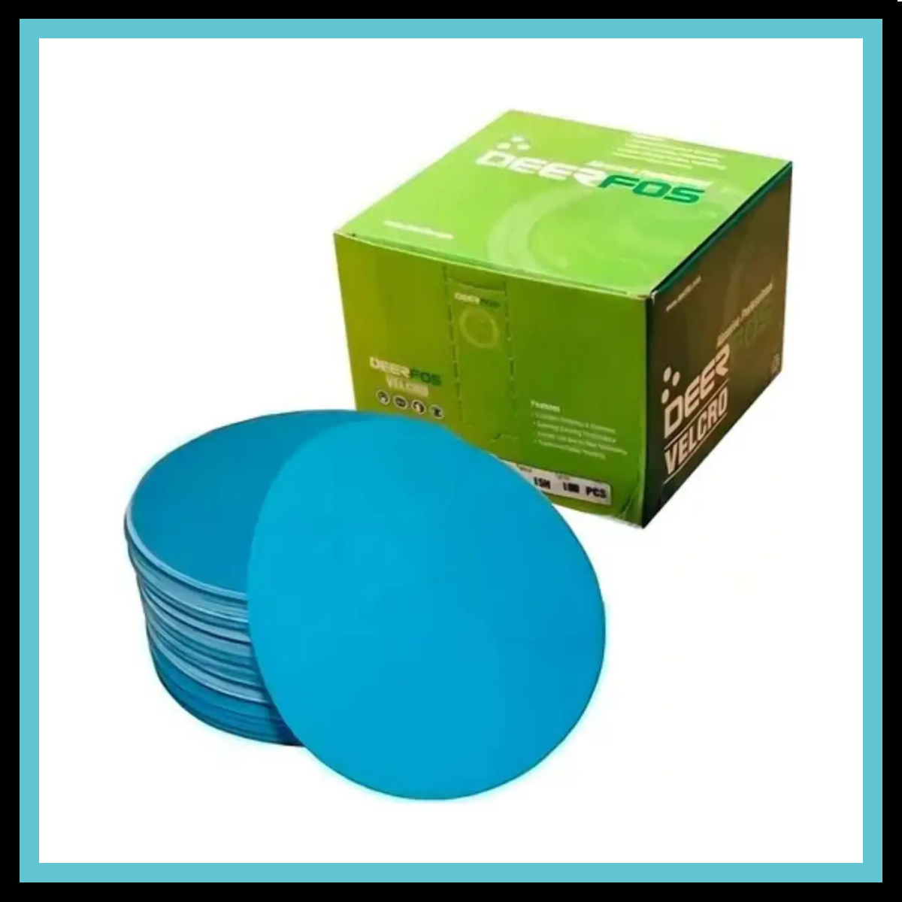
Especificações do Disco Rokit
Principais aplicações
Repintura automotiva
Preparação entre etapas, correções, lixamento e acabamento de superfícies em processos de reparação automotiva.
Metais
Preparação e acabamento de superfícies metálicas, auxiliando na obtenção de uma superfície uniforme.
Madeira
Lixamento, preparação de superfícies e preparação para pintura e acabamento.
Móveis e marcenaria
Indicado para móveis planejados, trabalhos de marcenaria e aplicações artesanais que utilizam lixadeiras de 125 mm.
Plásticos
Lixamento e acabamento de superfícies plásticas de acordo com a granulometria adequada ao processo.
Acabamento fino
A ampla faixa de grãos permite avançar das etapas de preparação até processos de acabamento fino.
Escolha o grão para sua aplicação
| Processo | Grãos | Indicação |
|---|---|---|
| Desbaste | P36 • P40 • P60 • P80 | Maior remoção de material e preparação inicial da superfície. |
| Preparação | P100 • P120 • P150 • P180 • P220 • P240 | Preparação intermediária e redução das marcas das etapas anteriores. |
| Acabamento | P280 • P320 • P360 • P400 • P600 | Uniformização da superfície e preparação para etapas de acabamento. |
| Acabamento fino | P800 • P1000 • P1200 • P1500 • P2000 | Etapas finais de lixamento e acabamento de maior refinamento. |
Granulometrias disponíveis
Diferenciais do SA331
Óxido de alumínio
Abrasivo versátil para lixamento e acabamento de diferentes superfícies, oferecendo corte eficiente e boa qualidade superficial.
Costado de filme
O filme proporciona uma base resistente e estável, contribuindo para um lixamento uniforme e consistente.
Troca rápida
O sistema de fixação por velcro facilita a substituição dos discos e agiliza as mudanças de granulometria.
Ampla faixa de acabamento
Granulometrias disponíveis desde operações de maior remoção até etapas de acabamento fino e preparação de superfícies.
A granulometria ideal depende do material, condição inicial da superfície e acabamento desejado. Entre em contato com a Robusta informando sua aplicação para auxiliarmos na escolha do Disco Rokit SA331 mais adequado para o seu processo.
Nossos canais
Cintas de lixa e abrasivos industriais para diferentes processos.